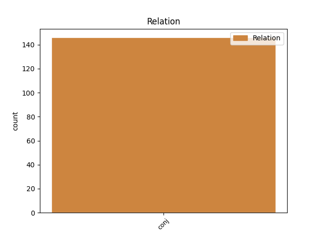
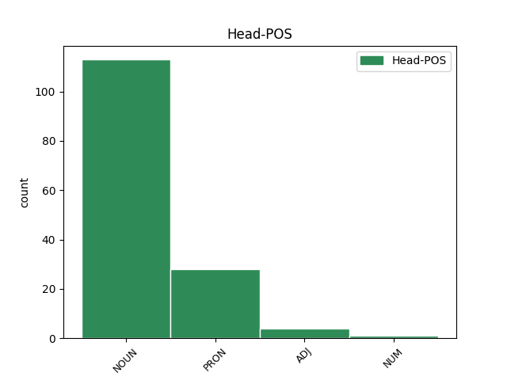
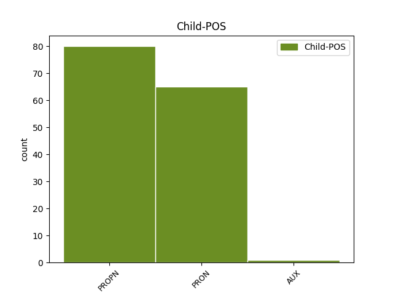

Distribution of features within this leaf



Agreement Rules sorted by frequency.
- When the dependent token is the conjunct(conj) of the head token, and the head token is NOUN and the dependent token is PROPN.
1 Mieslaulajista _ _ _ _ 0 _ _ _
2 loppukisassa _ _ _ _ 0 _ _ _
3 ovat _ _ _ _ 0 _ _ _
4 basso _ _ _ _ 0 _ _ _
5 Timo _ _ _ _ 0 _ _ _
6 Riihonen _ _ _ _ 0 _ _ _
7 , _ _ _ _ 0 _ _ _
8 baritoni _ _ _ _ 0 _ _ _
9 Jussi Jussi NOUN N Case=Nom|Number=Sing 0 _ _ _
10 Ziegler _ _ _ _ 0 _ _ _
11 sekä _ _ _ _ 0 _ _ _
12 tenori _ _ _ _ 0 _ _ _
13 Olli Olli PROPN N Case=Nom|Number=Sing 9 conj _ _
14 Brummer _ _ _ _ 0 _ _ _
15 . _ _ _ _ 0 _ _ _
1 STTK:n _ _ _ _ 0 _ _ _
2 puheenjohtaja _ _ _ _ 0 _ _ _
3 Mikko _ _ _ _ 0 _ _ _
4 Mäenpäällä _ _ _ _ 0 _ _ _
5 ei _ _ _ _ 0 _ _ _
6 ollut _ _ _ _ 0 _ _ _
7 tietoa _ _ _ _ 0 _ _ _
8 neuvottelujen _ _ _ _ 0 _ _ _
9 viimeisistä _ _ _ _ 0 _ _ _
10 vaiheista vaihe NOUN N Case=Ela|Number=Plur 0 _ _ _
11 tai _ _ _ _ 0 _ _ _
12 siitä se PRON Pron Case=Ela|Number=Sing|PronType=Dem 10 conj _ SpaceAfter=No
13 , _ _ _ _ 0 _ _ _
14 mitä _ _ _ _ 0 _ _ _
15 maan _ _ _ _ 0 _ _ _
16 hallitus _ _ _ _ 0 _ _ _
17 on _ _ _ _ 0 _ _ _
18 mahdollisesti _ _ _ _ 0 _ _ _
19 osapuolille _ _ _ _ 0 _ _ _
20 sanonut _ _ _ _ 0 _ _ _
21 tai _ _ _ _ 0 _ _ _
22 luvannut _ _ _ _ 0 _ _ _
23 . _ _ _ _ 0 _ _ _
1 Verosta _ _ _ _ 0 _ _ _
2 vastattiin _ _ _ _ 0 _ _ _
3 pitäjittäin _ _ _ _ 0 _ _ _
4 kaikki kaikki PRON Pron Case=Nom|Number=Sing|PronType=Ind 0 _ _ _
5 yhden _ _ _ _ 0 _ _ _
6 ja _ _ _ _ 0 _ _ _
7 yksi yksi PRON Pron Case=Nom|Number=Sing|PronType=Ind 4 conj _ _
8 kaikkien _ _ _ _ 0 _ _ _
9 puolesta _ _ _ _ 0 _ _ _
10 periaatteella _ _ _ _ 0 _ _ _
11 . _ _ _ _ 0 _ _ _
1 Mithridateen _ _ _ _ 0 _ _ _
2 sisko _ _ _ _ 0 _ _ _
3 Laodike _ _ _ _ 0 _ _ _
4 nousi _ _ _ _ 0 _ _ _
5 Kappadokian _ _ _ _ 0 _ _ _
6 hallitsijaksi _ _ _ _ 0 _ _ _
7 , _ _ _ _ 0 _ _ _
8 koska _ _ _ _ 0 _ _ _
9 hänen hän PRON Pron Case=Gen|Number=Sing|Person=3|PronType=Prs 0 _ _ _
10 ja _ _ _ _ 0 _ _ _
11 Ariaratheen Ariarathes PROPN N Case=Gen|Number=Sing 9 conj _ _
12 kaksi _ _ _ _ 0 _ _ _
13 poikaa _ _ _ _ 0 _ _ _
14 olivat _ _ _ _ 0 _ _ _
15 vielä _ _ _ _ 0 _ _ _
16 liian _ _ _ _ 0 _ _ _
17 nuoria _ _ _ _ 0 _ _ _
18 hallitsemaan _ _ _ _ 0 _ _ _
19 . _ _ _ _ 0 _ _ _
1 Kussakin _ _ _ _ 0 _ _ _
2 alakomitean _ _ _ _ 0 _ _ _
3 kokouksessa _ _ _ _ 0 _ _ _
4 voidaan _ _ _ _ 0 _ _ _
5 käsitellä _ _ _ _ 0 _ _ _
6 yhtä _ _ _ _ 0 _ _ _
7 , _ _ _ _ 0 _ _ _
8 useampaa usea ADJ A Case=Par|Degree=Cmp|Number=Sing 0 _ _ _
9 tai _ _ _ _ 0 _ _ _
10 kaikkia kaikki PRON Pron Case=Par|Number=Plur|PronType=Ind 8 conj _ _
11 edellä _ _ _ _ 0 _ _ _
12 luetelluista _ _ _ _ 0 _ _ _
13 aloista _ _ _ _ 0 _ _ _
14 . _ _ _ _ 0 _ _ _
1 Muista _ _ _ _ 0 _ _ _
2 ominaisuuksista _ _ _ _ 0 _ _ _
3 sen _ _ _ _ 0 _ _ _
4 verran _ _ _ _ 0 _ _ _
5 , _ _ _ _ 0 _ _ _
6 että _ _ _ _ 0 _ _ _
7 aikaa _ _ _ _ 0 _ _ _
8 voi _ _ _ _ 0 _ _ _
9 vaihtaa _ _ _ _ 0 _ _ _
10 lennossa lento NOUN N Case=Ine|Number=Sing 0 _ _ _
11 eli _ _ _ _ 0 _ _ _
12 ajastimen _ _ _ _ 0 _ _ _
13 ollessa olla AUX V Case=Ine|InfForm=2|Number=Sing|VerbForm=Inf|Voice=Act 10 conj _ _
14 käynnissä _ _ _ _ 0 _ _ _
15 . _ _ _ _ 0 _ _ _
1 Velkojen _ _ _ _ 0 _ _ _
2 hoito _ _ _ _ 0 _ _ _
3 viivästyy _ _ _ _ 0 _ _ _
4 ja _ _ _ _ 0 _ _ _
5 velkaongelma _ _ _ _ 0 _ _ _
6 pahenee _ _ _ _ 0 _ _ _
7 usein _ _ _ _ 0 _ _ _
8 yhdestä yksi NUM Num Case=Ela|Number=Sing|NumType=Card 0 _ _ _
9 ja _ _ _ _ 0 _ _ _
10 samasta sama PRON Pron Case=Ela|Number=Sing|PronType=Ind 8 conj _ _
11 syystä _ _ _ _ 0 _ _ _
12 : _ _ _ _ 0 _ _ _
13 velka _ _ _ _ 0 _ _ _
14 on _ _ _ _ 0 _ _ _
15 suomalaiselle _ _ _ _ 0 _ _ _
16 häpeä _ _ _ _ 0 _ _ _
17 . _ _ _ _ 0 _ _ _
Disagree Examples:
1 Tai _ _ _ _ 0 _ _ _
2 se _ _ _ _ 0 _ _ _
3 on _ _ _ _ 0 _ _ _
4 - _ _ _ _ 0 _ _ _
5 en _ _ _ _ 0 _ _ _
6 oleta _ _ _ _ 0 _ _ _
7 sitä _ _ _ _ 0 _ _ _
8 teidän _ _ _ _ 0 _ _ _
9 osalta osa NOUN N Case=Abl|Number=Sing|Number[psor]=Plur|Person[psor]=2|Style=Coll 0 _ _ _
10 , _ _ _ _ 0 _ _ _
11 mutta _ _ _ _ 0 _ _ _
12 niiden se PRON Pron Case=Gen|Number=Plur|PronType=Dem 9 conj _ SpaceAfter=No
13 , _ _ _ _ 0 _ _ _
14 jotka _ _ _ _ 0 _ _ _
15 tekivät _ _ _ _ 0 _ _ _
16 sopimuksen _ _ _ _ 0 _ _ _
17 sillä _ _ _ _ 0 _ _ _
18 tavalla _ _ _ _ 0 _ _ _
19 ja _ _ _ _ 0 _ _ _
20 jotka _ _ _ _ 0 _ _ _
21 myös _ _ _ _ 0 _ _ _
22 soveltavat _ _ _ _ 0 _ _ _
23 turvallisuuslauseketta _ _ _ _ 0 _ _ _
24 niin _ _ _ _ 0 _ _ _
25 yksipuolisesti _ _ _ _ 0 _ _ _
26 - _ _ _ _ 0 _ _ _
27 kyynistä _ _ _ _ 0 _ _ _
28 asianomaisen _ _ _ _ 0 _ _ _
29 väestön _ _ _ _ 0 _ _ _
30 ongelmien _ _ _ _ 0 _ _ _
31 ylenkatsomista _ _ _ _ 0 _ _ _
32 . _ _ _ _ 0 _ _ _
1 Perunat _ _ _ _ 0 _ _ _
2 ovat _ _ _ _ 0 _ _ _
3 väärää _ _ _ _ 0 _ _ _
4 lajia laji NOUN N Case=Par|Number=Sing 0 _ _ _
5 , _ _ _ _ 0 _ _ _
6 mansikat _ _ _ _ 0 _ _ _
7 Espanjasta Espanja PROPN N Case=Ela|Number=Sing 4 conj _ SpaceAfter=No
8 . _ _ _ _ 0 _ _ _
1 Juoksukengät _ _ _ _ 0 _ _ _
2 , _ _ _ _ 0 _ _ _
3 sisäkengät _ _ _ _ 0 _ _ _
4 , _ _ _ _ 0 _ _ _
5 tanssikengät tanssi#kenkä NOUN N Case=Nom|Number=Plur 0 _ _ _
6 – _ _ _ _ 0 _ _ _
7 ja _ _ _ _ 0 _ _ _
8 siinä se PRON Pron Case=Ine|Number=Sing|PronType=Dem 5 conj _ SpaceAfter=No
9 . _ _ _ _ 0 _ _ _
1 Lontoon _ _ _ _ 0 _ _ _
2 Heathrow _ _ _ _ 0 _ _ _
3 ´ _ _ _ _ 0 _ _ _
4 n n NOUN N Case=Nom|Number=Sing|Typo=Yes 0 _ _ _
5 ja _ _ _ _ 0 _ _ _
6 Gatwickin Gatwick PROPN N Case=Gen|Number=Sing 4 conj _ _
7 lentokentät _ _ _ _ 0 _ _ _
8 Englannissa _ _ _ _ 0 _ _ _
9 suljettiin _ _ _ _ 0 _ _ _
10 myöhään _ _ _ _ 0 _ _ _
11 sunnuntai-iltana _ _ _ _ 0 _ _ _
12 pommiuhkausten _ _ _ _ 0 _ _ _
13 vuoksi _ _ _ _ 0 _ _ _
14 ja _ _ _ _ 0 _ _ _
15 kaikki _ _ _ _ 0 _ _ _
16 lennot _ _ _ _ 0 _ _ _
17 Lontoon _ _ _ _ 0 _ _ _
18 pääkentille _ _ _ _ 0 _ _ _
19 keskeytettiin _ _ _ _ 0 _ _ _
20 toistaiseksi _ _ _ _ 0 _ _ _
1 Häät _ _ _ _ 0 _ _ _
2 olivat _ _ _ _ 0 _ _ _
3 minulle _ _ _ _ 0 _ _ _
4 iso _ _ _ _ 0 _ _ _
5 etappi etappi NOUN N Case=Nom|Number=Sing 0 _ _ _
6 ja _ _ _ _ 0 _ _ _
7 jotakin _ _ _ _ 0 _ _ _
8 aivan _ _ _ _ 0 _ _ _
9 muuta muu PRON Pron Case=Par|Number=Sing|PronType=Ind 5 conj _ _
10 kuin _ _ _ _ 0 _ _ _
11 pelkkä _ _ _ _ 0 _ _ _
12 virallinen _ _ _ _ 0 _ _ _
13 muodollisuus _ _ _ _ 0 _ _ _
14 . _ _ _ _ 0 _ _ _